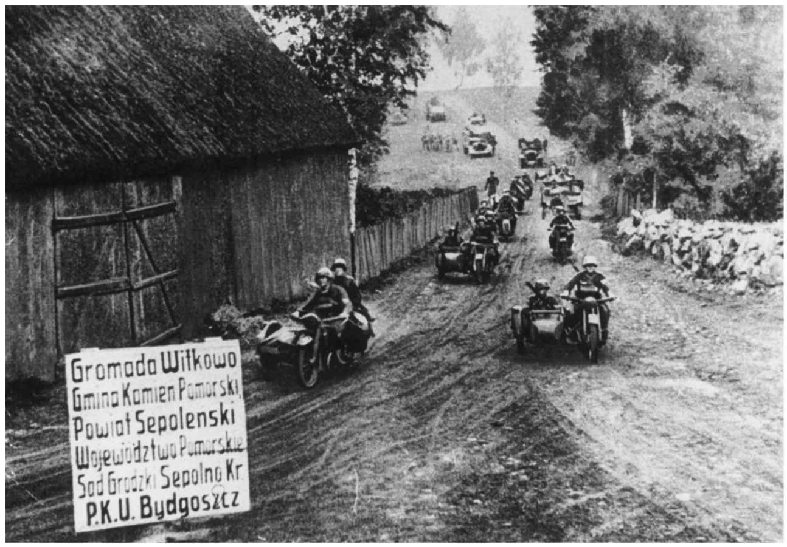
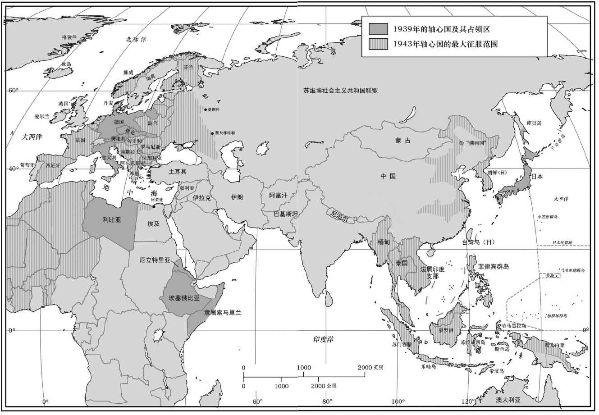
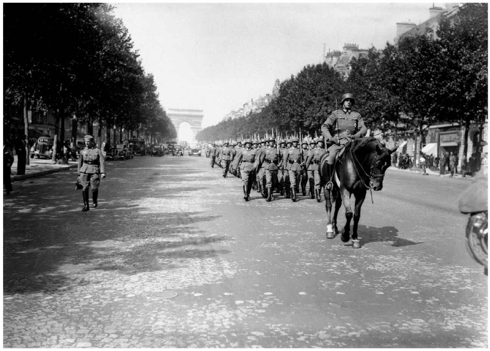

对波兰的瓜分
在波兰，德国人第一次展示了其新式“闪电战”的致命效力。首先，一批批俯冲轰炸机轰炸通信线路，扩大恐怖气氛和混乱局面。然后，装甲师在敌人的防线上打开一个个缺口，深入其后方，摧毁运输和通信设施，将敌方部队切割成碎片。最后是较轻便的摩托化师和步兵师出击，必要时在飞机和大炮的援助下，“肃清”被打得七零八落的敌军。
不幸的波兰由于其平坦的地形和老化的军队，正好是一个适合这种战争的“用武之地”。10天内，这场战役实际上胜负已定。德国的坦克飞机大队迎着日渐衰弱的抵抗迅速通过波兰农村。德军推进的速度迫使斯大林采取行动，以接管他与希特勒签订条约时所坚持要求的领土。9月17日，苏联红军穿过边界进入东波兰，两天后，与得胜的德国人建立了联系。9月27日，华沙沦陷，波兰政府领导人逃到罗马尼亚，然后从那里逃往法国。两天后，他们的国家被瓜分：德国人占领了拥有2200万人口的3.7万平方英里土地，苏联人占领了拥有1300万人口的7.7万平方英里土地。不到一个月，欧洲最大的国家之一就已完全地从地图上消失。

图274 德国入侵波兰的初期，一支摩托化德军迅速进入波兰。
苏联政府这时利用《莫斯科条约》中的秘密议定书来加强它在波罗的海地区的战略地位。1939年9月和10月，它强迫爱沙尼亚、拉脱维亚和立陶宛同意在它们的领土上建立苏联军事基地。作为补偿，立陶宛得到了长期渴望的维尔纽斯城及其周围地区，这里之前属于波兰。然后，苏联人向芬兰提出了在卡累利阿地峡和北冰洋沿岸的佩萨莫周围割让某些领土的要求，但芬兰人拒绝了，苏联红军于11月30日向芬兰发动了进攻。
芬兰向国际联盟发出呼吁，于是后者取消了苏联的成员国资格。芬兰人对苏联人猛攻的抵抗取得了意想不到的成功，他们在曼纳林防线击退了苏联人一次又一次的进攻。严重低估了芬兰力量的苏联人调上了配备重炮的正规军。他们摧毁了曼纳林防线，到3月中旬时，迫使芬兰人求和。随后产生的条约使苏联人获得的领土比他们原先要求的还多些，包括佩萨莫地区、维堡港口、芬兰湾中的几座岛屿和汉科海军基地。
苏联人对芬兰和波罗的海其他国家的这些行动的主要意义，也许在于它们反映了在苏德合作的幌子背后存在的竞争和不信任。证明这一点的还有，波罗的海地区的日耳曼人数世纪以来一直在梅梅尔和里加这样的中心城市居支配地位，但苏联坚决要求他们撤退到德国。
从波兰到法国
与此同时，西方战线处于令人不安的平静中。波兰被瓜分时，英国和法国无能为力地站在一旁。他们不能进入已被德国人严密封锁的波罗的海，他们的空军无法飞越德国领空，他们的陆军则在希特勒自1936年占领莱茵兰后所精心修筑的防御工事前受阻。因此，法国人只得牢牢地守在马其诺防线上，而在齐格菲防线（或称“西墙”）那边的德国人也没采取任何行动。
这种表面的平静被证明是靠不住的。1940年4月9日，德国军队突然采取行动，横扫了丹麦，并登上挪威海岸。他们的主要目的是要控制挪威海岸的峡湾，它们能为德国潜艇提供非常宝贵的基地，还能为船只将瑞典的铁矿石沿海岸运到德国提供保障。丹麦人没能抵抗，但挪威人因有英国的支持而进行了顽强的抵抗。但到6月初，法国本身也处在生死攸关的危险之中，于是，同盟国远征军驶离挪威，挪威政府也相随而去，前往伦敦避难。
同盟国在挪威所遭遇的挫折不久就因在7周内便横扫法国和低地国家的惊人闪电战而相形见绌。5月10日，德国人进攻荷兰和比利时，两天后又进攻法国。荷兰人的防守5天内便土崩瓦解。比利时人坚持得稍久些，但到5月28日，国王利奥波德宣布投降，比利时军队停止抵抗。其时，德国人已经绕过马其诺防线的最北端——这条防线从来没有延伸到海洋——并穿过阿登森林，在色当把法国人的防线打开了一个50英里长的缺口。装甲师这时向西朝英吉利海峡挺进，并于5月21日到达那里。德国人的突破性进展使法国北部的英国、法国和比利时军队与法国主力部队的联系被切断。佛兰德的同盟国军队，主要是英国军队，退缩到了敦刻尔克，再从那里撤退到英国。

地图30 第二次世界大战：轴心国的征服（1939—1943年）
随着敦刻尔克撤退的完成，德国军队继续向南推进，6月14日占领巴黎。士气低落的法国政府接受了条件苛刻的停战协定，其中包括释放所有的德国战俘，遣散法国军队，交出法国军舰，由德国占领法国一半略多的领土。
德国闪电战的惊人影响反映在低得令人难以置信的伤亡数字中。整个战役中，法国损失了约10万人，其他同盟国2万人，德国4.5万人。这些损失还不到第一次世界大战期间一次进攻所蒙受损失的一半。法国被认为是西方最强大的国家之一，它的迅速崩溃是一个令人心痛的打击。叛国和怯懦的指控被用来解释造成这一巨大灾难的原因。虽然这些指控并非完全没有根据，但另一些因素似乎更具决定性。一个因素是苏德条约的影响，它使希特勒能将军队集中在一条战线上。不过也许最重要的还是德国在好几个方面，尤其是在新型闪电战技术的发展方面所占有的优势。

图275 1940年9月，在法国的防卫迅速瓦解之后，德国军队行走在巴黎的香榭丽舍大街上。
不列颠之战
敦刻尔克撤退和法国沦陷之后，希特勒想当然地认为英国会明白道理并屈服。但是，他没能考虑到英国人民和他们的新首相温斯顿·丘吉尔。丘吉尔以特有的胆识和果断告诉他的人民——告诉全世界：“我们将在海滩上战斗，我们将在着陆地战斗，我们将在田野和街道中战斗，我们将在山区战斗；我们决不投降。”
其时，希特勒正犹豫不决，拿不准下一步如何行动。法国出人意料的迅速沦陷使他大为吃惊。最初，他试图同英国人达成协议，当这个提议被置之不理时，他便调动了他的空军，他确信只需通过空袭便能征服英国，无须涉险渡海。
随之而来的空袭发展成关键的不列颠之战，这是第二次世界大战重大转折点之一。在这一大规模的空战中，纳粹德国空军拥有的飞机在数量上远远超过了英国皇家空军——2670架对1475架。但是，皇家空军的喷火式战斗机和飓风式战斗驱逐机在性能上则更为先进，因为英国开始大批量生产飞机的时间比德国要晚几年。而且英国人还使用了雷达，这是一项新发明，能使敌机在距离其目标还有50英里至100英里时就被“看见”。拥有了这些优势，英国和英国自治领的几千名战斗机飞行员会同零星波兰、捷克斯洛伐克、法国和比利时飞行员，成功地击退了纳粹德国空军，从而使希特勒进攻英国的机会彻底落空。
征服巴尔干
由于不列颠之战的失败，希特勒决定来年春天入侵苏联。为了给预定的入侵作准备，希特勒向罗马尼亚派遣部队，以便让罗马尼亚军队协同进攻苏联。就在这时，墨索里尼却向希腊发动了蹩脚的侵略。墨索里尼以为这将是一次毫不费力的占领，但事实却证明它是一次耻辱的大失败。1940年10月28日，意大利军队从阿尔巴尼亚越过边界，进入希腊，希望胜利挺进雅典。但在越过希阿边境向前推进了一段距离之后，他们便于11月11日在迈措沃战役中遭到了决定性的失败。笨重的意大利装甲师在伊皮鲁斯山脉中遭遇不便，希腊人便经常借此占领高地，从那里切断并包围下面的敌人。到11月中旬，他们已将意大利人逐出边境，赶回到阿尔巴尼亚。在以后的几个星期中，希腊人攻占了阿尔巴尼亚几座大市镇。一时间，墨索里尼似乎不得不承受一次亚得里亚海的“敦刻尔克大溃退”。
希特勒不能对意大利人的挣扎袖手旁观，尤其是因为英国人正将空军部队派往希腊——一旦他开始入侵苏联，这将造成许多麻烦。于是，他于4月6日实施他的“马里塔行动”，征服了希腊和南斯拉夫。同在波兰和法国一样，纳粹德国的装甲师和空军以破竹之势前进。巴尔干半岛的高山地形并没有像人们所期望的那样成为有效障碍，英国的陆军和空军部队也过于虚弱，未能挡住潮水般涌来的德军。到4月13日，德国人已经进入贝尔格莱德，10天以后，英国人将他们的部队从希腊南部撤到了克里特岛。德国人随即对克里特岛发动了空降突袭，英国人大吃一惊，他们没有料到会遭到来自克里特岛以北180英里处的希腊本土的空袭。尽管德国人遭受了重大损失，但最终他们还是在6月初完全控制了该岛。
除在巴尔干的胜利外，希特勒的军队还在精明强干的埃尔温·隆美尔将军的领导下在北非取得了同样令人印象深刻的胜利。在将巴尔干和北非控制在手中之后，希特勒命令他的陆军于1941年6月22日越过苏联的边境。